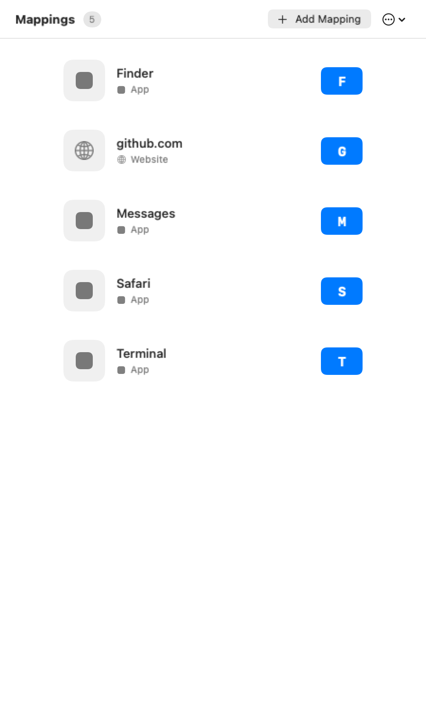

Screenshot — Inspector panel toolbar (tap the gear to toggle settings tabs):
Screenshot — Inspector panel toolbar (tap the gear to toggle settings tabs):Switching between apps usually means reaching for the Dock, opening Spotlight, or hunting through windows. KeyPath lets you skip all of that — press a key combination and your app, URL, or folder opens instantly. No mouse, no searching, no waiting.
| Target | Example | What happens |
|---|---|---|
| App | Safari, Terminal, Messages | Opens the app (or brings it to front if already running) |
| URL | github.com, google.com | Opens in your default browser |
| Folder | ~/Documents, ~/Desktop | Opens in Finder |
| Script | backup.sh, deploy.py | Runs the script (with safety protections) |
The fastest way to start launching apps from your keyboard:
Screenshot — Overlay header bar with inspector controls:
┌─────────────────────────────────────────────────────────┐
│ ·:·:·:·:·:·:· (drag texture) ● Base ☰ 👁 │
│ ↑ ↑ ↑ │
│ layer pill drawer hide │
└─────────────────────────────────────────────────────────┘ Screenshot — Inspector panel toolbar (tap the gear to toggle settings tabs):
┌─────────────────────────────────────────────────────────┐
│ │
│ [ Custom Rules ] [ Key Mapper ] [ ⚡Launchers ] │
│ ^^^^^^^^^^^ │
│ ⚙ ← gear toggles settings │
│ │
│ [ Keymap ] [ Layout ] [ Keycaps ] [ Sounds ] │
│ (hidden until gear is tapped) │
└─────────────────────────────────────────────────────────┘Screenshot — Launchers tab with shortcut list:
┌─────────────────────────────────────────────────────────┐
│ Launchers │
│ │
│ ┌─────────────────────────────────────────────────┐ │
│ │ 🧭 [ S ] Safari │ │
│ │ 💻 [ T ] Terminal │ │
│ │ 💬 [ M ] Messages │ │
│ │ 📁 [ F ] Finder │ │
│ │ 🌐 [ 1 ] github.com │ │
│ └─────────────────────────────────────────────────┘ │
│ │
│ [ + Add Shortcut ] [ ··· ] │
└─────────────────────────────────────────────────────────┘When you assign a launcher, the overlay keyboard shows app icons on bound keys:
┌───┬───┬───┬───┬───┬───┬───┬───┬───┬───┐
│ │ │ │ │ │ │ │ │ │ │
├───┼───┼───┼───┼───┼───┼───┼───┼───┼───┤
│ 📅│ 🧭│ 💻│ 📁│ │ │ │ 💬│ │ │
│Cal│Saf│Trm│Fnd│ │ │ │Msg│ │ │
├───┼───┼───┼───┼───┼───┼───┼───┼───┼───┤
│ │ │ │ │ │ │ │ │ │ │
└───┴───┴───┴───┴───┴───┴───┴───┴───┴───┘
Bound keys show their app icon on the overlayClick the drawer button (☰) on the overlay header to open the launcher drawer. It shows all your bindings at a glance, organized by type.

Screenshot — Launcher drawer (slides out from overlay): ┌──────────────────────────┐
│ Launchers 12 │ ← total count
│ │
│ APPS 5 │
│ ┌──────────────────────┐│
│ │ 🧭 [ S ] Safari ││
│ │ 💻 [ T ] Terminal ││
│ │ 💬 [ M ] Messages ││
│ │ 📝 [ V ] VS Code ││
│ │ 📅 [ C ] Calendar ││
│ └──────────────────────┘│
│ │
│ WEBSITES 3 │
│ ┌──────────────────────┐│
│ │ 🌐 [ 1 ] github.com ││
│ │ 🌐 [ 2 ] google.com ││
│ │ 🌐 [ 3 ] dashboard ││
│ └──────────────────────┘│
│ │
│ FOLDERS 2 │
│ ┌──────────────────────┐│
│ │ 📁 [ D ] Documents ││
│ │ 📁 [ K ] Desktop ││
│ └──────────────────────┘│
│ │
│ [ + Add ] [ ··· ] │
└──────────────────────────┘Each row shows the key badge, the app/URL icon, and the target name. Click any row to highlight the corresponding key on the overlay. Right-click for edit and delete options.
KeyPath offers two ways to trigger your launcher bindings. You can change this in the Launchers tab settings.
Screenshot — Activation mode picker (in Launchers tab settings):
┌─────────────────────────────────────────────┐
│ Activation │
│ │
│ ┌───────────┐ ┌───────────┐ ┌───────────┐ │
│ │ Hold │ │ Tap │ │ Leader │ │
│ │ (Hyper) │ │ Toggle │ │ → L │ │
│ └───────────┘ └───────────┘ └───────────┘ │
│ ^^^^^^^^^^ │
│ selected │
└─────────────────────────────────────────────┘Hold Caps Lock (Hyper) and press a letter. The launcher layer is active only while you hold the key — release and you're back to normal typing.
Hold Caps Lock ──→ press S ──→ Safari opens
press T ──→ Terminal opens
Release Caps Lock ──→ back to normalTap Caps Lock once to enter launcher mode. All your launcher keys light up on the overlay. Press a letter to launch, and you automatically return to normal mode.
Tap the leader key, then type L to activate the launcher layer. This keeps Caps Lock free for other uses.
To change modes: Open the inspector panel, go to the Launchers tab, and click the settings button (☰) to access the activation mode picker.
Add apps and enter website URLs manually in the launcher inspector. Existing saved shortcuts remain available. KeyPath does not scan browser history or suggest sites from it.
Don't want to configure from scratch? KeyPath includes pre-built launcher collections:
Enable these in the Rules tab to get started immediately, then customize from there.
/Applications/Safari.app)